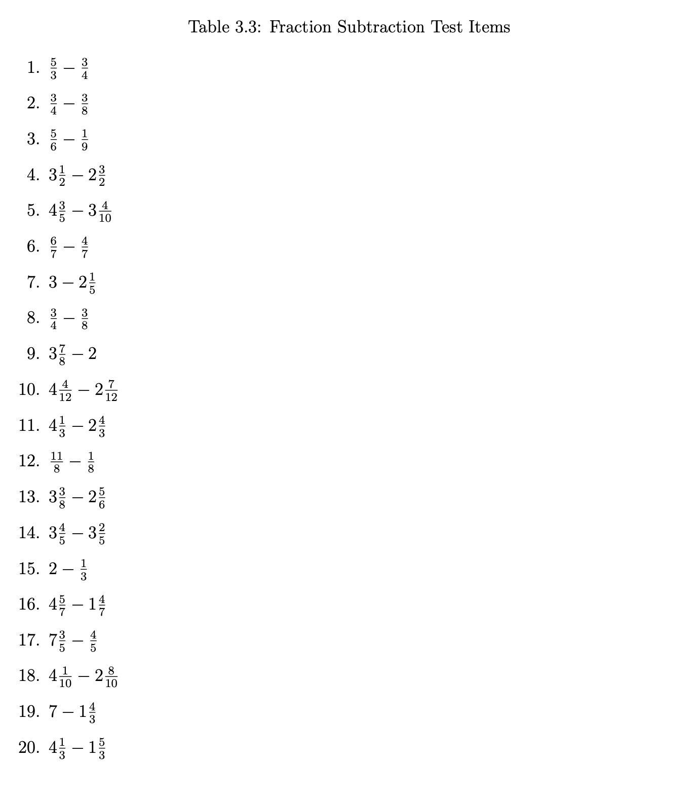
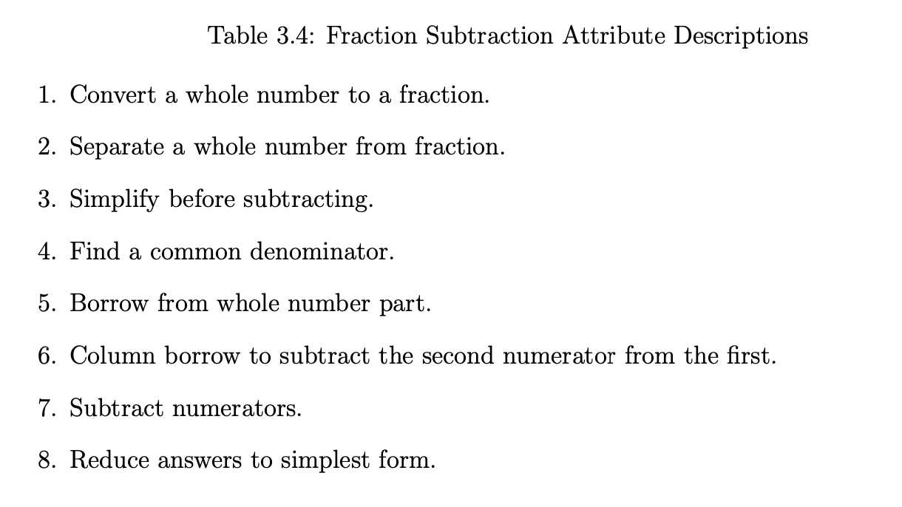

Today’s Lecture
Difficulties in Estimating and Using Multidimensional Measurement Models
Model statistical identification (Q-matrix Definitions)
Empirical identification
Differing definitions of dimensionality
Quantifying the number of dimensions
Latent variable indeterminacy
Estimation of models
Statistical Identification
Statistical identification refers to the ability to estimate the parameters of a model uniquely
Often, this becomes a system of equations where the number of parameters is less than the number of equations
Much of the literature on statistical identification is based on the idea comes from confirmatory factor analysis (CFA) models
Although more difficult to show for IRT models, the CFA standard is often used
Statistical identification is a necessary condition for model estimation
But, it is not a sufficient condition (see empirical identification)
Two Types of Statistical Identification
Location and scale identification
Minimum numbers of items needed per latent variable
Location and Scale Identification
How the mean and standard deviation for each latent variable are determined
Generally, one constraint is needed for the mean and one for the standard deviation for each latent variable
The constraints can be to specify the mean and standard deviation for one latent variable (i.e., standardized latent variables)
Other constraints include setting marker items for the mean and standard deviation
Marker items for the mean are specified by placing a constraint on item intercepts
Marker items for the standard deviation are specified by placing a constraint on item discrimination parameters
Minimum Number of Items Needed per Latent Variable
For a single latent variable model (i.e., unidimensional model), the minimum number of items needed is three
For a model with two latent variables and an estimated factor correlation, the minimum number of items needed is five
The Q-matrix must be specified so that one latent variable has at least three items and the other latent variable has at least two items
Note that this only applies if items measure only one latent variable
Where do these numbers come from?
Consider the model-implied distribution in CFA model with three items measuring one latent variable:
\[\boldsymbol{Y}_p \sim N \left(\boldsymbol{\mu} + \boldsymbol{\Lambda}_\boldsymbol{Q} \boldsymbol{\mu}_\theta, \boldsymbol{\Lambda}_\boldsymbol{Q} \boldsymbol{\Phi} \boldsymbol{\Lambda}_\boldsymbol{Q}^T + \boldsymbol{\Psi} \right)\]
Where:
\(\boldsymbol{\mu}\) is the vector of item intercepts (size \(3 \times 1\) )\(\boldsymbol{\Lambda}_\boldsymbol{Q}\) is a column vector of factor loadings (size \(3 \times 1\) )\(\boldsymbol{\mu}_\theta\) is the vector of latent variable means (size \(1 \times 1\) )\(\boldsymbol{\Phi}\) is the covariance matrix of the latent variable (i.e., the variance; size \(1 \times 1\) )\(\boldsymbol{\Psi}\) is the (diagonal) covariance matrix of the residuals (size \(3 \times 3\) )
Model-implied Mean Vector
For a unidimensional model with three items, the model-implied mean vector \(\left(\tilde{\boldsymbol{\mu}}\right)\) is:
\[ \tilde{\boldsymbol{\mu}} =
\begin{bmatrix}
\mu_{1} + \lambda_{11}\mu_\theta \\
\mu_{2} + \lambda_{21}\mu_\theta \\
\mu_{2} + \lambda_{31}\mu_\theta \\
\end{bmatrix}
\]
From the data, we know there are three means (one per item): \[ \bar{\boldsymbol{Y}} =
\begin{bmatrix}
\bar{Y}_1 \\
\bar{Y}_2 \\
\bar{Y}_3 \\
\end{bmatrix}
\]
So, without any constraints, we have seven unknown parameters but only three equations
Adding Constraints
If we set the factor mean to zero, we have the following:
\[ \tilde{\boldsymbol{\mu}} =
\begin{bmatrix}
\mu_{1} \\
\mu_{2} \\
\mu_{2} \\
\end{bmatrix}
\]
Now, we have three unknown parameters and three equations
A just identified model with \(\tilde{\boldsymbol{\mu}} = \bar{\boldsymbol{Y}}\)
But, what about if we wanted to estimate \(\mu_\theta\) ?
We will get to that after looking at the model-implied covariance matrix
Model-implied Covariance Matrix
For a unidimensional model with three items, the model-implied covariance matrix \(\left(\tilde{\boldsymbol{\Sigma}}\right)\) is:
\[ \tilde{\boldsymbol{\Sigma}} =
\begin{bmatrix}
\lambda_{11}^2\phi_{11} + \psi_1 & \lambda_{11}\lambda_{21}\phi_{11} & \lambda_{11}\lambda_{31}\phi_{11} \\
\lambda_{21}\lambda_{11}\phi_{11} & \lambda_{21}^2\phi_{11} + \psi_2 & \lambda_{21}\lambda_{31}\phi_{11} \\
\lambda_{31}\lambda_{11}\phi_{11} & \lambda_{31}\lambda_{21}\phi_{11} & \lambda_{31}^2\phi_{11} + \psi_3 \\
\end{bmatrix}
\]
From the data, we know there are three variances (one per item): \[ \boldsymbol{S} =
\begin{bmatrix}
s_{11} & s_{12} & s_{13} \\
s_{12} & s_{22} & s_{23} \\
s_{13} & s_{23} & s_{33} \\
\end{bmatrix}
\]
So, without any constraints, we have seven unknown parameters but only six equations
Adding Constraints
If we set the factor variance to one, we have the following:
\[ \tilde{\boldsymbol{\Sigma}} =
\begin{bmatrix}
\lambda_{11}^2 + \psi_1 & \lambda_{11}\lambda_{21} & \lambda_{11}\lambda_{31} \\
\lambda_{21}\lambda_{11} & \lambda_{21}^2 + \psi_2 & \lambda_{21}\lambda_{31} \\
\lambda_{31}\lambda_{11} & \lambda_{31}\lambda_{21} & \lambda_{31}^2 + \psi_3 \\
\end{bmatrix}
\]
Adding Constraints
Now, we have six unknown parameters and six equations
\[
\begin{align}
s_{11}&=\lambda_{11}^2 + \psi_1 \\
s_{21}&=\lambda_{11}\lambda_{21} \\
s_{31}&=\lambda_{11}\lambda_{31} \\
s_{22}&=\lambda_{21}^2 + \psi_2 \\
s_{32}&=\lambda_{21}\lambda_{31} \\
s_{33}&=\lambda_{31}^2 + \psi_3 \\
\end{align}
\]
Determining Parameters
With some algebra, we can determine the equations for each of the parameters
The factor loadings come from the off-diagonal elements of the covariance matrix
\[
\begin{align}
\lambda_{11}&=\frac{s_{21}}{s_{11}} \\
\lambda_{21}&=\frac{s_{31}}{s_{11}} \\
\lambda_{31}&=\frac{s_{32}}{s_{22}} \\
\end{align}
\]
The unique variances come from the diagonal elements of the covariance matrix along with the factor loadings
\[
\begin{align}
\psi_1&=s_{11}-\lambda_{11}^2 = s_{11}-\frac{s_{21}}{s_{11}}\\
\psi_2&=s_{22}-\lambda_{21}^2 = s_{22}-\frac{s_{31}}{s_{11}} \\
\psi_3&=s_{33}-\lambda_{31}^2 = s_{33}-\frac{s_{32}}{s_{22}}\\
\end{align}
\]
Non-Standardized Factors (Mean)
With the result of the factor loadings, we can now estimate the factor mean with one additional constraint:
\[ \tilde{\boldsymbol{\mu}} =
\begin{bmatrix}
\mu_{1} + \lambda_{11}\mu_\theta \\
\mu_{2} + \lambda_{21}\mu_\theta \\
\mu_{2} + \lambda_{31}\mu_\theta \\
\end{bmatrix}
\]
Let’s set the item intercept of the first item to zero:
\[ \tilde{\boldsymbol{\mu}} =
\begin{bmatrix}
0 + \lambda_{11}\mu_\theta\\
\mu_{2} + \lambda_{21}\mu_\theta \\
\mu_{3} + \lambda_{31}\mu_\theta \\
\end{bmatrix}
\]
Non-Standardized Factors (Mean)
We now see that:
\[
\begin{align}
\mu_\theta&=\frac{\bar{Y}_1}{\lambda_{11}} \\
\mu_2&=\bar{Y}_2-\lambda_{21}\mu_\theta = \bar{Y}_2-\lambda_{21}\frac{\bar{Y}_1}{\lambda_{11}} \\
\mu_3&=\bar{Y}_3-\lambda_{31}\mu_\theta = \bar{Y}_3-\lambda_{31}\frac{\bar{Y}_1}{\lambda_{11}} \\
\end{align}
\]
Non-Standardized Factors (Variance)
With the result of the factor loadings, we can now estimate the factor variance with one additional constraint:
\[ \tilde{\boldsymbol{\Sigma}} =
\begin{bmatrix}
\lambda_{11}^2\phi_{11} + \psi_1 & \lambda_{11}\lambda_{21}\phi_{11} & \lambda_{11}\lambda_{31}\phi_{11} \\
\lambda_{21}\lambda_{11}\phi_{11} & \lambda_{21}^2\phi_{11} + \psi_2 & \lambda_{21}\lambda_{31}\phi_{11} \\
\lambda_{31}\lambda_{11}\phi_{11} & \lambda_{31}\lambda_{21}\phi_{11} & \lambda_{31}^2\phi_{11} + \psi_3 \\
\end{bmatrix}
\]
Let’s set the item discrimination of the first item to one:
\[ \tilde{\boldsymbol{\Sigma}} =
\begin{bmatrix}
\phi_{11} + \psi_1 & \lambda_{21}\phi_{11} & \lambda_{31}\phi_{11} \\
\lambda_{21}\phi_{11} & \lambda_{21}^2\phi_{11} + \psi_2 & \lambda_{21}\lambda_{31}\phi_{11} \\
\lambda_{31}\phi_{11} & \lambda_{31}\lambda_{21}\phi_{11} & \lambda_{31}^2\phi_{11} + \psi_3 \\
\end{bmatrix}
\]
A similar derivation can be done for the other parameters
My Derivation (90% Confidence)
From my algebra, I get the following:
\[
\begin{align}
\phi_{11} &= \frac{s_{13}s_{12}}{s_{23}} \\
\lambda_{21}&=\frac{s_{23}}{s_{13}} \\
\lambda_{31}&=\frac{s_{23}}{s_{12}} \\
\psi_1&=s_{11}-\frac{s_{13}s_{12}}{s_{23}} \\
\psi_2&=s_{22}-\frac{s_{23}s_{12}}{s_{13}} \\
\psi_3&=s_{33}-\frac{s_{23}s_{13}}{s_{12}} \\
\end{align}
\]
Statistical Identification and the Q-matrix
Q-matrices specify the alignment of items to latent variables
But, not all Q-matrices are statistically identified
Our previous example used the most basic Q-matrix, a column vector of ones
In general, Q-matrices need:
Three items per latent variable
At least some items that are unique to each latent variable
Example Multidimensional Assessment
Tatsuoka’s fraction subtraction data: 
Example Latent Variables
Tatsuoaka’s fraction subtraction data latent variables: 
Example Q-matrices
From the Tatsuoka Fraction Subtraction Q-matrix:
alpha1 alpha2 alpha3 alpha4 alpha5 alpha6 alpha7 alpha8
Item1 0 0 0 1 0 1 1 0
Item2 0 0 0 1 0 0 1 0
Item3 0 0 0 1 0 0 1 0
Item4 0 1 1 0 1 0 1 0
Item5 0 1 0 1 0 0 1 1
Item6 0 0 0 0 0 0 1 0
Item7 1 1 0 0 0 0 1 0
Item8 0 0 0 0 0 0 1 0
Item9 0 1 0 0 0 0 0 0
Item10 0 1 0 0 1 0 1 1
Item11 0 1 0 0 1 0 1 0
Item12 0 0 0 0 0 0 1 1
Item13 0 1 0 1 1 0 1 0
Item14 0 1 0 0 0 0 1 0
Item15 1 0 0 0 0 0 1 0
Item16 0 1 0 0 0 0 1 0
Item17 0 1 0 0 1 0 1 0
Item18 0 1 0 0 1 1 1 0
Item19 1 1 1 0 1 0 1 0
Item20 0 1 1 0 1 0 1 0
More Examples
From our coding activity two weeks ago, the Q-matrix was:
theta1 theta2
item1 1 0
item2 1 0
item3 1 0
item4 1 0
item5 1 0
item6 0 1
item7 0 1
item8 0 1
item9 0 1
item10 0 1
This is often called a “simple structure” Q-matrix, although that term has been used in other places
Within-item unidimensionality is another term that has been used
Q-Matrix Math
Apart from showing the alignment, matrix operations on the Q-matrix can be helpful to determine if a Q-matrix is statistically identified
To see the number of items measuring each latent variable and each pair of latent variables, use:
\[\boldsymbol{Q}^T \boldsymbol{Q}\]
t (FSQmatrix) %*% FSQmatrix
alpha1 alpha2 alpha3 alpha4 alpha5 alpha6 alpha7 alpha8
alpha1 3 2 1 0 1 0 3 0
alpha2 2 13 3 2 8 1 12 2
alpha3 1 3 3 0 3 0 3 0
alpha4 0 2 0 5 1 1 5 1
alpha5 1 8 3 1 8 1 8 1
alpha6 0 1 0 1 1 2 2 0
alpha7 3 12 3 5 8 2 19 3
alpha8 0 2 0 1 1 0 3 3
Diagonal elements: Number of items measuring each latent variable
Off-diagonal elements: Number of items measuring each pair of latent variables
More Q-Matrix Math
Additionally, we can use the Q-matrix to build a quick sum-score for each latent variable:
\[\boldsymbol{Y} \boldsymbol{Q}\]
= as.matrix (FSdata)= Y %*% FSQmatrixhead (sumScores)
alpha1 alpha2 alpha3 alpha4 alpha5 alpha6 alpha7 alpha8
[1,] 3 9 3 0 6 1 12 2
[2,] 3 12 3 3 8 1 17 2
[3,] 2 4 1 2 1 0 9 0
[4,] 0 8 2 4 5 2 14 3
[5,] 0 1 1 0 1 0 4 1
[6,] 0 2 0 0 0 0 3 0
Sum Scores
Although sum scores aren’t what we want to use (way too many assumptions), they can help show how correlated traits may be:
alpha1 alpha2 alpha3 alpha4 alpha5 alpha6 alpha7
alpha1 1.0000000 0.8345775 0.8037195 0.6839375 0.7911124 0.6484896 0.8434539
alpha2 0.8345775 1.0000000 0.8782167 0.7970944 0.9577298 0.7896634 0.9691487
alpha3 0.8037195 0.8782167 1.0000000 0.6200224 0.9325677 0.6353779 0.8448615
alpha4 0.6839375 0.7970944 0.6200224 1.0000000 0.7178911 0.8237720 0.8751911
alpha5 0.7911124 0.9577298 0.9325677 0.7178911 1.0000000 0.7593760 0.9204327
alpha6 0.6484896 0.7896634 0.6353779 0.8237720 0.7593760 1.0000000 0.8470215
alpha7 0.8434539 0.9691487 0.8448615 0.8751911 0.9204327 0.8470215 1.0000000
alpha8 0.6448976 0.8325724 0.6341646 0.7807335 0.7461302 0.6669306 0.8444153
alpha8
alpha1 0.6448976
alpha2 0.8325724
alpha3 0.6341646
alpha4 0.7807335
alpha5 0.7461302
alpha6 0.6669306
alpha7 0.8444153
alpha8 1.0000000
Q-Matrix Limits
If exploratory analyses are to be used (and most times, they shouldn’t be used), then a very specific form of the Q-matrix indicates that the model is statistically identified
Lower echelon form: The largest number of latent variables that can be statistically identified (with orthogonal/uncorrleated latent variables)
Zeroes at the top-right of the Q-matrix
First item measures only first latent variable
Second item measures both first and second latent variable
More Exploratory Q-Matrix Topics
If factors need correlations, more zeros need to be added to the lower-echelon Q-matrix
Moreover, the saturation of the Q-matrix with ones (up to lower-echelon form) is one way to use confirmatory methods for exploratory analyses
For instance, if some items are well known to measure some latent variables, the remainder can load onto all other latent variables
Empirical Identification
Empirical identification is the ability for the data to support an estimable multidimensional model
Essentially, the latent variables are estimable
In practice this tends to mean:
The latent variable correlations are less than one (and have a positive semi-definite covariance matrix)
Any marker items (for loadings) have non-zero loading estimates
Example Empirical Underidentification
= 10 = 1000 = 1 = matrix (data = 0 , nrow = nItems, ncol = 2 )1 : 5 ,1 ] = 1 6 : 10 ,2 ] = 1
[,1] [,2]
[1,] 1 0
[2,] 1 0
[3,] 1 0
[4,] 1 0
[5,] 1 0
[6,] 0 1
[7,] 0 1
[8,] 0 1
[9,] 0 1
[10,] 0 1
# generate item intercepts = rnorm (n = nItems, mean = 0 , sd = 1 )# generate item slopes = rlnorm (n = nItems, mean = 0 , sd = 1 )# uncorrelated univariate normal = matrix (data = 0 , nrow = nExaminees, ncol = nFactors)= thetaZ# generate data = matrix (data = NA , nrow = nExaminees, ncol = nItems)colnames (dataMat) = paste0 ("item" , 1 : nItems)for (item in 1 : nItems){= mu[item] + Qmatrix[item,1 ]* lambda[item]* theta[,1 ]= exp (logit)/ (1 + exp (logit))= rbinom (n = nExaminees, size = 1 , prob = prob)if (! require (mirt)) install.packages ("mirt" )library (mirt)= matrix (data = 0 , nrow = nItems, ncol = 2 )colnames (Qmatrix2D) = paste0 ("theta" , 1 : 2 )rownames (Qmatrix2D) = paste0 ("item" , 1 : nItems)1 : 5 ,1 ] = 1 6 : 10 ,2 ] = 1 = matrix (c (FALSE , TRUE , TRUE , FALSE ), nrow = 2 , ncol = 2 )= mirt (data = dataMat, model = mirt.model (input= Qmatrix2D, COV= COV), itemtype = "2PL" , SE = TRUE , verbose= FALSE )coef (underIdentifiedModel)$ GroupPars
MEAN_1 MEAN_2 COV_11 COV_21 COV_22
par 0 0 1 0.2822926 1
CI_2.5 NA NA NA -0.3717239 NA
CI_97.5 NA NA NA 0.9363091 NA
Call:
mirt(data = dataMat, model = mirt.model(input = Qmatrix2D, COV = COV),
itemtype = "2PL", SE = TRUE, verbose = FALSE)
Full-information item factor analysis with 2 factor(s).
Converged within 1e-04 tolerance after 280 EM iterations.
mirt version: 1.39
M-step optimizer: BFGS
EM acceleration: Ramsay
Number of rectangular quadrature: 31
Latent density type: Gaussian
Information matrix estimated with method: Oakes
Second-order test: model is a possible local maximum
Condition number of information matrix = 248.8244
Log-likelihood = -5697.064
Estimated parameters: 21
AIC = 11436.13
BIC = 11539.19; SABIC = 11472.49
G2 (1002) = 690.59, p = 1
RMSEA = 0, CFI = NaN, TLI = NaN
Empirical Underidentification Indicators
Often, empirical underidentification presents itself in model results
(Maximum likelihood) algorithms that do not converge within default specifications
(Bayesian) posterior distributions lack convergence
Standard errors that are very large
Correlations that are very large
NaNs for model fit
Differing Definitions of Dimensionality
Depending on the class of models used, the number of dimensions can be defined differently
For instance, in CFA models, the number of dimensions is the number of latent variables
In latent class models, the number of dimensions can be:
The number of classes -or-
The number of categorical variables
Also, Steinley and McDonald (2007) show how the number of latent classes plus one can be equivalent to the number of latent variables in a CFA model
DCMs are latent class models, so the number of dimensions can be defined in multiple ways, also
The number of attributes (i.e., the number of latent variables)
The number of classes
All of this is independent of models with method factors or other random effects
Each of which is a dimension
Steinley, D., & McDonald, R. P. (2007). Examining factor score distributions to determine the nature of latent spaces. Multivariate Behavioral Research, 42(1), 133-156.
Quantifying the Number of Dimensions
In exploratory analyses, it can be difficult to easily determine the number of dimensions
Matrix algebra-based methods (Principal components or other older methods) have highly unstable estimates of the number of dimensions
The number of dimensions can be estimated from the eigenvalues of the correlation matrix
But, this is not always reliable
Likelihood-based exploratory methods put a set of constraints on the model for statistical identification (later class)
Easier to specify confirmatory models
No uniform agreement on what level of correlation between latent variables indicates too high (so can be combined)
Latent Variable Indeterminacy
Latent variable indeterminacy is the ability to rotate the latent variables without changing the model
Often, this is a problem in exploratory analyses
Without knowledge of what your latent variables are, rotations are one way to try to derive meaning
In confirmatory analyses, latent variables are constructed so they have meaning
Rotations are not needed–but still could be applied:
For instance, a model where the latent variables are correlated:
Example Rotations (Confirmatory Model)
We can show that a model where:
\[ \boldsymbol{\theta} \sim N(\boldsymbol{0}, \boldsymbol{\Phi})\]
And
\[
\begin{array}{cc}
\boldsymbol{Y}_p = \boldsymbol{\mu} + \boldsymbol{\Lambda}_\boldsymbol{Q} \boldsymbol{\theta}_p + \boldsymbol{e}_p; & \boldsymbol{e}_p \sim N\left(\boldsymbol{0}, \boldsymbol{\Psi} \right) \\
\end{array}
\]
Is equivalent to:
\[ \boldsymbol{\theta}_R \sim N(\boldsymbol{0}, \boldsymbol{I})\]
\[
\begin{array}{cc}
\boldsymbol{Y}_p = \boldsymbol{\mu} + \boldsymbol{\Lambda}_R \boldsymbol{\theta}_R + \boldsymbol{e}_p; & \boldsymbol{e}_p \sim N\left(\boldsymbol{0}, \boldsymbol{\Psi} \right) \\
\end{array}
\]
When: \[\boldsymbol{\Lambda}_R = \boldsymbol{\Lambda}_\boldsymbol{Q} \boldsymbol{L}_{\boldsymbol{\Phi}}\]
Where \(\boldsymbol{L}_{\boldsymbol{\Phi}}\) is the lower triangle of the Cholesky decomposition of \(\boldsymbol{\Phi}\)
Practical Implications of Rotational Indeterinancy
Rotational indeterminancy is a problem if your latent variables lack a validity argument
Exploratory analyses are the main problem
Although other solutions exist for confirmatory models, rotations aren’t needed as meaning is derived by construction of the items and the model
So no need to rotate, philosophically
Estimation of Models
Finally, estimation of models with some distributions can be difficult if not impossible
CFA models (all items multivariate normal): No problems
Marginal distribution of data can be derived without numeric integration
Any model that contains one or more items that are not multivariate normal:
Marginal ML methods must numerically integrate across the latent variables
Numeric integration requires a set of quadrature points (e.g., summation locations) per dimension
The total number of quadrature points is the product of the number of quadrature points per dimension
Exponential increases in the number of calculations needed per linear increase in latent variables
Ramifications of Estimation Difficulties
Many estimation methods exist
MML via Quasi-Newton or EM
EM via Gibbs sampling or Metropolis-Hastings (hybrid ML/MCMC; approximate estimates)
Numerical integration via sampling (approximate estimates)
Implications for model comparisons and replication
Limited information methods
Use only tetra or polychoric correlations
Must specify constraints (Mplus’ delta vs. theta)
Does not fit full data
Implications for missing data
Bayesian methods
Linear increase in calculations for linear increases in latent variables
Implications for model comparisons and replication
Summary
Statistical identification is a necessary condition for model estimation
But, it is not a sufficient condition (see empirical identification)
Statistical identification is often the easiest difficulty to overcome
Estimation difficulties are more often the problem
Especially for models with non-normal data
Many long-running issues with rotational indeterminacy and with differing definitions of dimensionality
But, these are more philosophical than practical
Discussion
Now, we will discuss Torres Irribarra & Arneson (2023)